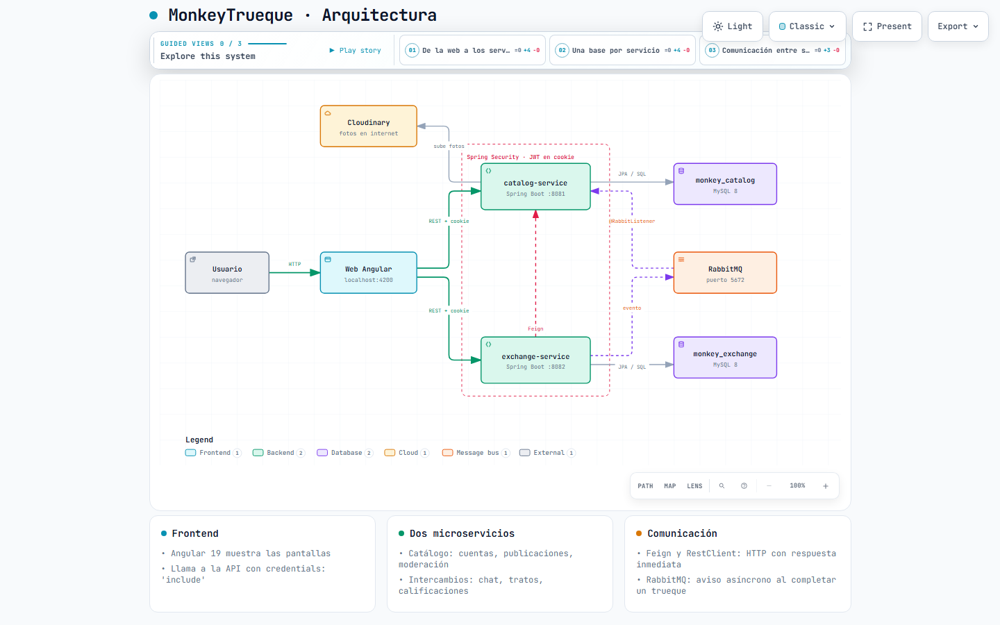
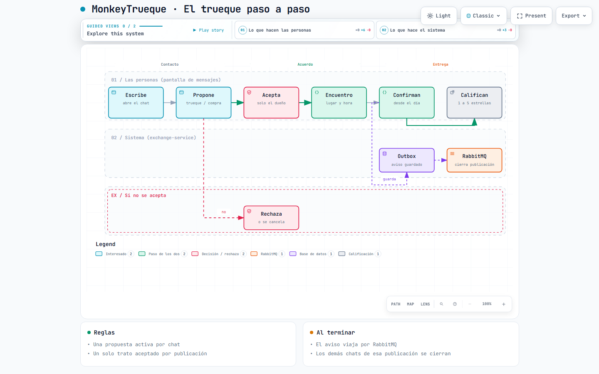
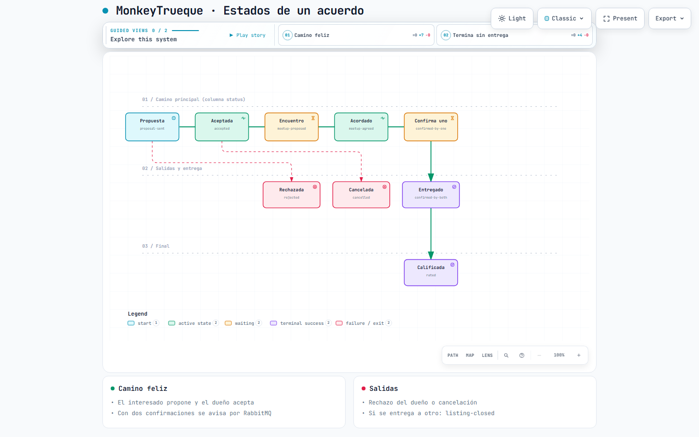
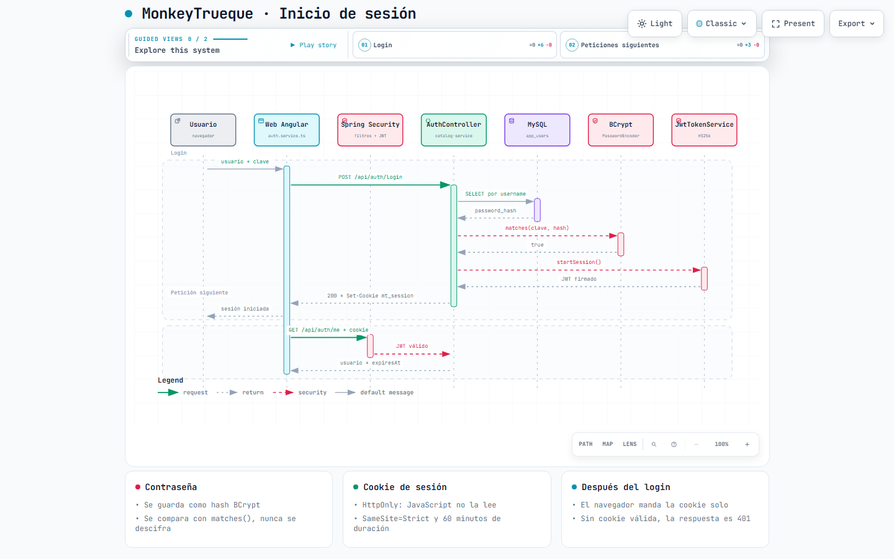
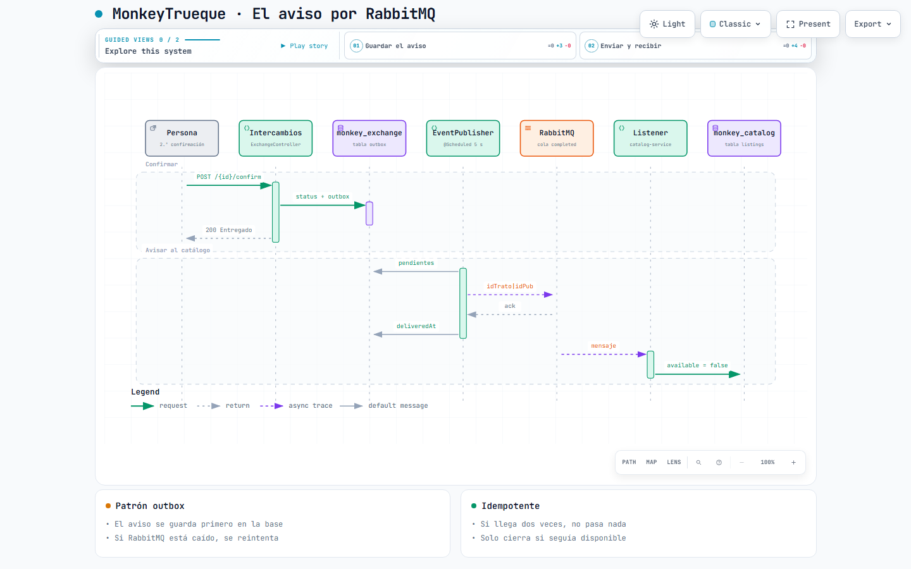

MonkeyTrueque, carpeta por carpeta
Esta guía explica todo el proyecto para que cualquiera del equipo pueda arrancarlo, entenderlo y defenderlo en la presentación. Cada parte tiene una explicación sin código y otra con código.
¿Qué es MonkeyTrueque?
Es una página web de Lima donde la gente publica cosas que ya no usa. Otra persona puede cambiarlas por algo (trueque), comprarlas (venta en soles) o recibirlas gratis (regalo). Todo el trato se hace dentro de un chat, paso a paso: propuesta, encuentro, entrega y calificación.
¿Quiénes la usan?
| Persona | Qué puede hacer |
|---|---|
| Visitante | Ver publicaciones sin cuenta. |
| Usuario | Publicar, chatear, proponer tratos, calificar y reportar. |
| Moderador | Revisar reportes y sancionar a usuarios normales. |
| Administrador | Todo lo del moderador, y además gestionar el equipo. Registrarse nunca da este rol. |
Las piezas, en una frase cada una
- frontend (Angular, puerto 4200): las pantallas que ves.
- catalog-service (Spring Boot, puerto 8081): cuentas, publicaciones y moderación.
- exchange-service (Spring Boot, puerto 8082): chat, tratos y calificaciones.
- MySQL: dos bases de datos,
monkey_catalogymonkey_exchange. - RabbitMQ: lleva un aviso de intercambios a catálogo cuando un trueque termina.
- Cloudinary: guarda las fotos en internet.
Mapa del proyecto
MonkeyTrueque/
├── README.md guía rápida para arrancar
├── Iniciar-MySQL.sql crea las 2 bases y el usuario de MySQL
├── .gitignore qué NO se sube a GitHub
├── docs/guia/ ESTA guía y los diagramas
├── backend/
│ ├── .env claves y configuración local
│ ├── README.md · DEMO_PRESENTACION.md
│ ├── catalog-service/ microservicio 1 (puerto 8081)
│ │ ├── pom.xml dependencias (Maven)
│ │ ├── mvnw · mvnw.cmd Maven incluido, no hay que instalarlo
│ │ ├── iniciar.cmd arranca el servicio
│ │ └── src/
│ │ ├── main/java/… el código Java
│ │ ├── main/resources/application.yml configuración
│ │ ├── main/resources/db/migration/V*.sql Flyway
│ │ └── test/java/… pruebas automáticas
│ └── exchange-service/ microservicio 2 (puerto 8082), misma estructura
└── frontend/
├── package.json · angular.json · tsconfig*.json
├── public/ imágenes y mapa de distritos
└── src/
├── index.html · main.ts · styles.scss
└── app/
├── app.config.ts · app.routes.ts · app.component.*
├── core/ sesión, llamadas a la API y modelos
└── features/ las pantallas (cuenta, admin, login, marketplace)Cómo arrancarlo
Qué instalar (una sola vez)
| Programa | Versión | Para qué |
|---|---|---|
| Java (JDK) | 21 (con 17 no compila) | Ejecutar los dos servicios de Spring Boot |
| Node.js | 18 o superior | Ejecutar Angular |
| MySQL Server | 8.x | Las bases de datos |
| Erlang/OTP | 26.2.5 (instalar antes que RabbitMQ) | RabbitMQ está hecho en Erlang |
| RabbitMQ Server | 4.0.9 | Los avisos entre servicios |
Comprueba Java con java -version. Debe decir 21.
Paso 1 · Preparar MySQL (una sola vez)
Abre MySQL Workbench (o la consola de MySQL) como root y ejecuta el archivo Iniciar-MySQL.sql de la raíz. Crea las dos bases y el usuario que usa la aplicación:
CREATE DATABASE IF NOT EXISTS monkey_catalog CHARACTER SET utf8mb4 COLLATE utf8mb4_unicode_ci;
CREATE DATABASE IF NOT EXISTS monkey_exchange CHARACTER SET utf8mb4 COLLATE utf8mb4_unicode_ci;
CREATE USER IF NOT EXISTS 'monkeytrueque'@'localhost' IDENTIFIED BY 'monkeytrueque_local';
GRANT ALL PRIVILEGES ON monkey_catalog.* TO 'monkeytrueque'@'localhost';
GRANT ALL PRIVILEGES ON monkey_exchange.* TO 'monkeytrueque'@'localhost';Las tablas no se crean a mano: las crea Flyway solo, al arrancar cada servicio (sección 07).
Paso 2 · Verificar servicios de Windows
Tecla Windows → escribe "Servicios". MySQL80 y RabbitMQ deben estar En ejecución.
Paso 3 · Arrancar todo con un solo comando
En la carpeta raíz del proyecto hay un archivo iniciar-todo.cmd. Haz doble clic en él, o escribe iniciar-todo.cmd en una terminal ubicada en esa carpeta. Abre 3 ventanas, una por cada parte. Si es la primera vez, también ejecuta npm install. Para apagar una parte, cierra su ventana.
O, si prefieres, abre las tres terminales a mano
:: Terminal 1 · catálogo (8081)
cd %USERPROFILE%\Downloads\MonkeyTrueque\backend\catalog-service
iniciar.cmd
:: Terminal 2 · intercambios (8082)
cd %USERPROFILE%\Downloads\MonkeyTrueque\backend\exchange-service
iniciar.cmd
:: Terminal 3 · web (4200)
cd %USERPROFILE%\Downloads\MonkeyTrueque\frontend
npm install :: solo la primera vez
npm startEn PowerShell (la consola muestra PS al inicio) se escribe .\iniciar.cmd, con .\ delante. La primera vez tarda varios minutos porque descarga dependencias. Cada servicio está listo cuando aparece Started CatalogServiceApplication o Started ExchangeServiceApplication.
Paso 4 · Probar
- localhost:8081/actuator/health y localhost:8082/actuator/health deben mostrar
{"status":"UP"}. - Abre localhost:4200. Administrador: usuario
admin, contraseñaAdmin123*. - Para probar el chat se necesitan dos cuentas: abre una ventana de incógnito y regístrate con otra.
Errores típicos
| Ves esto | Significa | Solución |
|---|---|---|
ERR_CONNECTION_REFUSED en 8081 o 8082 | Ese servicio no está corriendo o se cerró | Mira la terminal de ese servicio y busca la línea ERROR o APPLICATION FAILED TO START. |
release version 21 not supported | Estás usando Java 17 | Instala Java 21 y ajusta JAVA_HOME. |
Access denied for user 'monkeytrueque' | No se ejecutó Iniciar-MySQL.sql | Ejecútalo como root. |
Port 8082 was already in use | Otro programa usa el puerto | Cierra la otra terminal o reinicia la PC. |
Connection refused con el puerto 5672 | RabbitMQ apagado | Inicia el servicio RabbitMQ (y revisa que Erlang esté instalado). |
Validate failed: Migrations have failed | Una base quedó a medias | Bórrala (DROP DATABASE monkey_exchange;) y vuelve a arrancar el servicio. |
| Puedes entrar, pero el chat no funciona | Solo está caído el 8082 | Inicia exchange-service. Login y publicaciones dependen solo del 8081. |
Diagramas
Cada imagen tiene una versión interactiva en la carpeta docs/guia/diagramas/. Ábrela en el navegador: puedes hacer zoom, buscar y usar "Play story" para recorrer el diagrama paso a paso. Los botones del visor están en inglés porque la herramienta (Archify) solo trae ese idioma.



status de la tabla exchanges. Abrir versión interactiva

Carpeta raíz MonkeyTrueque/
| Archivo o carpeta | Por qué está ahí |
|---|---|
| README.md | La guía corta para instalar y arrancar. GitHub la muestra en la portada del repositorio. |
| Iniciar-MySQL.sql | Script que crea las dos bases y el usuario monkeytrueque. Se ejecuta una vez por computadora. |
| .gitignore | Lista lo que Git no sube: carpetas generadas como runtime/ y .kombai/, y los .env. |
| .git/ | El historial de Git. No se toca a mano. |
| .kombai/ | Configuración de una herramienta de diseño con IA (Kombai). Está vacía y no afecta la app. |
| docs/guia/ | Esta guía, los diagramas interactivos y sus fuentes JSON (diagramas/fuentes/, por si hay que editarlos con Archify). |
| backend/ | Los dos microservicios en Java (secciones 04 a 06). |
| frontend/ | La web en Angular (sección 10). |
Carpeta backend/
| Archivo o carpeta | Por qué está ahí |
|---|---|
| .env | Variables de configuración local (por ejemplo, cuánto dura la sesión). Los iniciar.cmd lo leen al arrancar. Tiene claves privadas: no lo compartas fuera del equipo. |
| .gitignore | Evita subir target/, .m2/ y .env. |
| .m2/ | Caché local de Maven: las librerías descargadas (Spring, MySQL, etc.). Se llena sola la primera vez. Si la borras, se vuelve a descargar. |
| .metadata/ | Configuración del IDE (Spring Tools/Eclipse). No es código. |
| README.md | Detalle técnico: endpoints, colas y variables de entorno. |
| DEMO_PRESENTACION.md | Cómo activar los datos de demostración (DEMO_DATA_ENABLED=true) y las cuentas de prueba (admin, moderadora y usuarios). |
| mysql-init/ | Carpeta vacía. El script real es Iniciar-MySQL.sql de la raíz. |
| catalog-service/ | Microservicio 1 (sección 05). |
| exchange-service/ | Microservicio 2 (sección 06). |
Los archivos que tiene cada servicio
| Archivo | Qué es |
|---|---|
| pom.xml | La "lista de compras" de Maven: versión de Java (21), de Spring Boot (4.1.1) y las librerías. |
| mvnw / mvnw.cmd | Maven Wrapper: trae Maven incluido. Por eso nadie tiene que instalar Maven. |
| iniciar.cmd | Script de Windows que lee ..\.env, prepara variables (en catálogo también el usuario admin de la demo) y ejecuta mvnw.cmd spring-boot:run. |
| .env (solo catálogo) | Las claves de Cloudinary para subir fotos. Es privado. |
| HELP.md | Archivo que genera Spring Initializr al crear el proyecto. Solo tiene enlaces de ayuda. |
| target/ | Lo que genera la compilación (clases .class). Se borra y regenera sola. |
| src/main/java/ | El código Java. |
| src/main/resources/ | application.yml (configuración) y db/migration/ (Flyway). |
| src/test/java/ | Las pruebas automáticas (sección 13). |
pom.xml: las dependencias importantes
Sin código
Cada "starter" de Spring trae un paquete de funciones. Declaras lo que necesitas y Maven lo descarga. Por ejemplo, security trae el login, data-jpa trae la base de datos y amqp trae RabbitMQ.
Con código
<parent>spring-boot-starter-parent 4.1.1</parent>
<java.version>21</java.version>| Dependencia | Para qué sirve | Dónde |
|---|---|---|
spring-boot-starter-webmvc | Crear la API REST (@RestController) | los dos |
spring-boot-starter-data-jpa | Entidades y repositorios (base de datos) | los dos |
mysql-connector-j | El "driver" para hablar con MySQL | los dos |
spring-boot-starter-flyway + flyway-mysql | Migraciones de la base de datos | los dos |
spring-boot-starter-security | Seguridad y BCrypt | los dos |
…-security-oauth2-resource-server | Validar el JWT en cada petición | los dos |
spring-boot-starter-validation | @Valid, @NotBlank, @Size… | los dos |
spring-boot-starter-amqp | RabbitMQ | los dos |
spring-boot-starter-actuator | /actuator/health para saber si está vivo | los dos |
spring-cloud-starter-openfeign | Llamar al catálogo con una interfaz | intercambios |
…-circuitbreaker-resilience4j | Circuit breaker para esas llamadas | intercambios |
spring-retry | Reintentos al procesar mensajes de RabbitMQ | catálogo |
micrometer-registry-prometheus | Métricas en /actuator/prometheus | los dos |
catalog-service (puerto 8081)
Se encarga de las cuentas, los perfiles, las publicaciones, los reportes, las sanciones, las apelaciones y el panel de administración.
El patrón que se repite en todo el backend
Sin código
Una petición entra por un Controller (la recepción). El Controller usa un Repository (el almacenero) para leer o guardar Entities (las filas de una tabla). Si hay lógica que usan varios, va en un Service.
Con código
Web → ListingController
→ ListingRepository
→ ListingEntity → tabla listings| El nombre termina en… | Es… |
|---|---|
…Controller | Recibe las URLs /api/... |
…Entity | Una tabla convertida en clase Java |
…Repository | Consultas a esa tabla |
…Service | Lógica reutilizable |
…Config | Configuración que Spring carga al arrancar |
Todos los archivos de src/main/java/pe/edu/monkeytrueque/catalog/
| Archivo | Qué hace | Prioridad |
|---|---|---|
| CatalogServiceApplication | El main. Arranca Spring Boot con @SpringBootApplication. | saber |
| AuthController | Registro, login, logout, /me y editar el perfil. | estudiar |
| JwtTokenService | Firma el JWT y lo guarda en la cookie. | estudiar |
| SecurityConfig | Rutas públicas y privadas, BCrypt, CORS y validación del JWT. | estudiar |
| SessionTokenResolver | Saca el token de la cookie mt_session o del encabezado Authorization. | saber |
| TrustedOriginFilter | Protección CSRF: rechaza con 403 los cambios que no vienen de nuestra web. | saber |
| ApiExceptionHandler | Convierte los errores de validación en mensajes en español (Problem Details). | saber |
| ListingController | Crear, ver, editar y borrar publicaciones, con sus reglas. | estudiar |
| ListingEntity | La tabla listings. | estudiar |
| ListingRepository | Consultas a listings, como la de publicaciones públicas. | estudiar |
| ListingCompletionController | Plan B para cerrar una publicación: verifica con intercambios que el trato está completo. | saber |
| ExchangeActivity | Pregunta a intercambios si una publicación tiene tratos activos antes de editarla o borrarla. | saber |
| RestClientConfig | Configura el cliente HTTP RestClient. | saber |
| ExchangeEvents | Declara en RabbitMQ el exchange, la cola y la cola de mensajes fallidos. | saber |
| CompletedExchangeListener | Escucha RabbitMQ y cierra la publicación entregada. | estudiar |
| CloudinaryImageStorage | Sube y borra fotos en Cloudinary. | saber |
| UserProfileController / Entity / Repository | Perfil público y edición del perfil. | saber |
| ReportController / Entity / Repository | Reportar publicaciones y revisar reportes. | saber |
| AppealController | Apelaciones de los sancionados. | saber |
| AdminAccess | Revisa si el usuario es admin o moderador. | saber |
| AdminController | El panel de administración: usuarios, sanciones, equipo y publicaciones ocultas. | saber |
| ModerationSanctionService | Revisa si un usuario tiene una sanción activa. | saber |
| ModerationSelfServiceController | /api/moderation/me/sanctions: tus propias sanciones. | saber |
| ModerationEvidenceController / Service | Archivos adjuntos (pruebas) de reportes y apelaciones. | saber |
| AnalyticsController | Cuenta visitas diarias para las estadísticas del admin. | existe |
| DemoAdminSeeder | Al arrancar, si la tabla de usuarios está vacía, crea admin / Admin123* y le da el rol de administrador. | existe |
| DemoDataSeeder | Crea publicaciones de ejemplo si se activa DEMO_DATA_ENABLED. | existe |
AuthController: registro y login
Sin código
Registro: limpia el nombre de usuario, revisa que no exista, guarda la contraseña triturada con BCrypt, crea el perfil y entrega la sesión.
Login: busca al usuario (solo si no está desactivado), compara la contraseña con el hash y, si coincide, entrega la cookie de sesión. Si falla, el mensaje es el mismo para usuario o contraseña incorrectos, para no revelar qué usuarios existen.
Con código
@PostMapping("/register")
@Transactional
AuthResponse register(@Valid @RequestBody RegisterRequest request,
HttpServletResponse http) {
String username = request.username().trim().toLowerCase(Locale.ROOT);
if (exists(username)) throw new ResponseStatusException(
HttpStatus.CONFLICT, "Ese nombre de usuario ya esta ocupado.");
String userId = UUID.randomUUID().toString();
jdbc.update("INSERT INTO app_users (user_id, username, password_hash) VALUES (?, ?, ?)",
userId, username, passwords.encode(request.password()));
...
return response(userId, http);
}@Valid @RequestBody: convierte el JSON en un objeto y lo valida.@Transactional: los dos INSERT (usuario y perfil) se guardan juntos o ninguno.- Los
?son consultas parametrizadas: evitan la inyección SQL. passwords.encode(...)es BCrypt.passwords.matches(clave, hash)compara en el login.
// Validación con mensajes en español (record = clase de solo datos)
record RegisterRequest(
@NotBlank(message = "El nombre es obligatorio") @Size(max = 120, ...) String name,
@NotBlank(...) @Pattern(regexp = "[A-Za-z0-9._-]{3,32}", ...) String username,
@NotBlank(...) @Size(min = 8, max = 100, message = "La contraseña debe tener entre 8 y 100 caracteres") String password) {}JwtTokenService: el pase y la cookie
Instant startSession(HttpServletResponse response, String userId, String username, String name) {
Instant now = Instant.now();
Instant expiresAt = now.plus(lifetime); // 60 minutos por defecto
JwtClaimsSet claims = JwtClaimsSet.builder().issuer("monkeytrueque")
.issuedAt(now).expiresAt(expiresAt)
.subject(userId).claim("username", username).claim("name", name).build();
String token = encoder.encode(... MacAlgorithm.HS256 ..., claims).getTokenValue();
response.addHeader(HttpHeaders.SET_COOKIE, cookie(token, lifetime).toString());
return expiresAt;
}
private ResponseCookie cookie(String value, Duration maxAge) {
return ResponseCookie.from("mt_session", value)
.httpOnly(true).secure(secureCookie).sameSite("Strict").path("/").maxAge(maxAge).build();
}La explicación completa está en la sección 08 (Seguridad).
ListingController: las reglas de las publicaciones
Sin código
- Solo el dueño puede editar o borrar (si no, 403).
- No se borra si hay tratos en curso (409).
- Con tratos en curso no se cambia lo esencial: título, modo, precio o lo que acepta.
- Entre 1 y 3 fotos JPG, PNG o WebP.
- Si estás sancionado, no puedes publicar.
Con código
@DeleteMapping("/{id}")
void delete(@AuthenticationPrincipal Jwt jwt, @PathVariable String id) {
var listing = repository.findById(id)
.orElseThrow(() -> new ResponseStatusException(HttpStatus.NOT_FOUND));
if (!listing.ownerId.equals(jwt.getSubject()))
throw new ResponseStatusException(HttpStatus.FORBIDDEN);
if (exchangeActivity.activeDeals(listing.id, jwt) > 0)
throw new ResponseStatusException(HttpStatus.CONFLICT,
"No puedes eliminar una publicación con propuestas o acuerdos en curso...");
...
}@AuthenticationPrincipal Jwt jwt: Spring entrega el token ya validado.jwt.getSubject()es el id del usuario. Nunca se confía en un id que mande la web.@PathVariable: toma el{id}de la URL.orElseThrow(...): si no existe, responde 404.
Consulta SQL propia (ListingRepository)
@Query(value = "SELECT l.* FROM listings l WHERE l.available = TRUE AND l.moderation_hidden = FALSE "
+ "AND NOT EXISTS (SELECT 1 FROM app_users u WHERE u.user_id = l.owner_id AND u.deactivated = TRUE) "
+ "ORDER BY l.created_at DESC LIMIT 100", nativeQuery = true)
List<ListingEntity> findPublicListings();Devuelve solo publicaciones disponibles, no ocultas y de cuentas activas: las 100 más nuevas.
CompletedExchangeListener: recibir el aviso de RabbitMQ
@RabbitListener(queues = ExchangeEvents.QUEUE) // "monkeytrueque.exchange.completed"
@Transactional
public void complete(String payload) {
String[] ids = payload.split("\\|", -1); // "idTrato|idPublicacion"
var listing = listings.findById(ids[1]).orElseThrow(...);
if (listing.available) { // idempotente: si llega 2 veces, no pasa nada
listing.available = false;
listings.save(listing);
}
}application.yml del catálogo
Sin código
Es el panel de configuración. Cada valor tiene la forma ${VARIABLE:valorPorDefecto}: si existe la variable de entorno, usa esa; si no, usa el valor por defecto. Así funciona en cualquier PC sin tocar el código.
Con código
spring:
config:
import: optional:file:.env[.properties] # lee el .env de la carpeta
datasource:
url: ${CATALOG_DB_URL:jdbc:mysql://localhost:3306/monkey_catalog?createDatabaseIfNotExist=true}
username: ${MYSQL_USER:monkeytrueque}
jpa:
hibernate:
ddl-auto: validate # Hibernate NO crea tablas; Flyway sí
mvc:
problemdetails:
enabled: true # errores en formato RFC 7807
server:
port: ${SERVER_PORT:8081}
app:
cors-origin: ${CORS_ORIGIN:http://localhost:4200}
jwt-expiration-minutes: ${APP_JWT_EXPIRATION_MINUTES:60}
exchange-url: ${EXCHANGE_URL:http://localhost:8082}exchange-service (puerto 8082)
Se encarga del chat, los tratos (propuesta, encuentro, confirmación), las calificaciones, los bloqueos y el aviso por RabbitMQ.
Todos los archivos de src/main/java/pe/edu/monkeytrueque/exchange/
| Archivo | Qué hace | Prioridad |
|---|---|---|
| ExchangeServiceApplication | El main. Tiene @EnableFeignClients (activa Feign) y @EnableScheduling (activa el @Scheduled del outbox). | saber |
| ExchangeController | El corazón del proyecto: proponer, aceptar, rechazar, cancelar, encuentro, confirmar y calificar. | estudiar |
| ConversationController | El chat: abrir una conversación, enviar mensajes y listar tus chats. | estudiar |
| ExchangeEntity | La tabla exchanges: cada acuerdo con su estado. | estudiar |
| ConversationEntity | La tabla conversations: dueño, interesado y publicación. | estudiar |
| DirectMessageEntity | La tabla direct_messages: cada mensaje. | estudiar |
| CompletionEventPublisher | Cada 5 segundos envía a RabbitMQ los avisos pendientes. | estudiar |
| CompletionOutboxEntity / Repository | La tabla exchange_completion_outbox: avisos esperando salir. | saber |
| CatalogClient | Interfaz Feign para llamar al catálogo. | saber |
| CatalogListings | Envuelve esa llamada con un circuit breaker y traduce errores (404, 410, 503). | saber |
| ExchangeEvents | Declara el exchange y la cola de RabbitMQ. | saber |
| ExchangeRepository / ConversationRepository / DirectMessageRepository | Las consultas a cada tabla. | saber |
| BlockedUserController / Entity / Repository | Bloquear y desbloquear usuarios. | saber |
| PublicReputationController | Promedio de estrellas de un usuario. Las reseñas ocultas no cuentan. | saber |
| AdminExchangeController | Para moderadores: ver acuerdos y ocultar reseñas ofensivas. | saber |
| SecurityConfig / SessionTokenResolver / TrustedOriginFilter / ApiExceptionHandler | Copias de las del catálogo: la misma seguridad y los mismos errores. | saber |
| DemoExchangeSeeder | Crea un chat y un acuerdo de ejemplo si se activa la variable de entorno. | existe |
| MessageEntity / MessageRepository | La tabla antigua exchange_messages. Sus datos se pasaron a direct_messages. | existe |
ExchangeController: la máquina de estados
Sin código
Cada acuerdo tiene un estado. Cada botón solo funciona desde ciertos estados: por ejemplo, no puedes confirmar la entrega si todavía no acordaron el encuentro. Si lo intentas, el backend responde 409 Conflict.
Con código
static final Set<String> ACTIVE = Set.of("proposal-sent", "accepted",
"meetup-proposed", "meetup-agreed", "confirmed-by-one");
static final Set<String> COMMITTED = Set.of("accepted",
"meetup-proposed", "meetup-agreed", "confirmed-by-one");
static final Set<String> COMPLETED = Set.of("confirmed-by-both", "rated");| Ruta (POST) | Quién | Regla principal |
|---|---|---|
/api/exchanges | Interesado | Una propuesta activa por chat. En trueque, lo ofrecido debe ser de un tipo que el dueño acepta. |
/{id}/accept | Dueño | Un solo trato aceptado por publicación. |
/{id}/reject | Dueño | Solo si la propuesta está pendiente. |
/{id}/cancel | Cualquiera | Hasta el encuentro acordado. |
/{id}/meetup | Cualquiera | Fecha y hora en el futuro (hora de Lima). |
/{id}/meetup/accept | El otro | No puedes aceptar tu propio encuentro. |
/{id}/confirm | Cada uno | Desde el día del encuentro. Con dos confirmaciones se completa. |
/{id}/rating | Cada uno | Solo después de las dos confirmaciones. Con 1 o 2 estrellas, el comentario debe tener al menos 30 caracteres. |
Proponer (resumido)
@PostMapping @ResponseStatus(HttpStatus.CREATED) @Transactional
ExchangeView propose(@AuthenticationPrincipal Jwt jwt, @Valid @RequestBody Proposal request) {
var conversation = conversations.findById(request.conversationId()).orElseThrow(...404...);
if (!conversation.visitorId.equals(jwt.getSubject())) → 403 // solo el interesado
if (!"active".equals(conversation.status)) → 409 // chat cerrado
if (exchanges.existsByConversationIdAndStatusIn(conversation.id, ACTIVE)) → 409
var listing = listings.available(conversation.listingId); // Feign + circuit breaker
...
exchange.status = "proposal-sent";
exchanges.save(exchange);
notify(conversation, ..., "📝 Propuesta: ..."); // mensaje automático en el chat
}Confirmar la entrega
requireStatus(exchange, Set.of("meetup-agreed", "confirmed-by-one"), "Primero acuerden el encuentro");
if (LocalDate.now(clock).isBefore(LocalDate.parse(exchange.meetupDate)))
conflict("Podrás confirmar la entrega a partir del día del encuentro");
if (owner) exchange.ownerConfirmed = true; else exchange.proposerConfirmed = true;
exchange.status = exchange.ownerConfirmed && exchange.proposerConfirmed
? "confirmed-by-both" : "confirmed-by-one";
if (exchange.status.equals("confirmed-by-both")) {
outbox.save(new CompletionOutboxEntity(exchange.id, exchange.listingId)); // aviso para RabbitMQ
closeOtherDeals(exchange); // los demás tratos → listing-closed, los demás chats → closed
}ConversationController: el chat
Sin código
- Un chat por persona y publicación: si ya existe, se reutiliza.
- No puedes escribirte a ti mismo.
- No funciona si hay bloqueo, sanción de mensajes o si la publicación ya se entregó.
- Solo los dos participantes leen el chat (si no, 403).
- Copia el título, la foto y el precio de la publicación para no preguntar al catálogo cada vez (desnormalizar).
- La web vuelve a pedir el chat cada 3 segundos (polling).
Con código
private ConversationEntity participant(Jwt jwt, String id) {
var conversation = conversations.findById(id)
.orElseThrow(() -> new ResponseStatusException(HttpStatus.NOT_FOUND));
if (!conversation.ownerId.equals(jwt.getSubject())
&& !conversation.visitorId.equals(jwt.getSubject())) {
throw new ResponseStatusException(HttpStatus.FORBIDDEN);
}
return conversation;
}| Ruta | Qué hace |
|---|---|
GET /api/conversations/mine | Tus chats, los más recientes primero |
POST /api/conversations | Abre un chat con el primer mensaje (201) |
POST /api/conversations/{id}/messages | Envía un mensaje (máximo 400 caracteres) |
ExchangeEntity: @Version
@Entity @Table(name = "exchanges")
class ExchangeEntity {
@Id String id;
@Column(nullable = false) String status;
boolean ownerConfirmed;
boolean proposerConfirmed;
...
@Version long version; // bloqueo optimista
}@Version evita que dos cambios al mismo tiempo se pisen: si dos personas modifican el mismo acuerdo, la segunda falla en lugar de borrar el cambio de la primera.
Base de datos y Flyway
Un MySQL, dos bases
MySQL80 (un solo servidor, puerto 3306)
├── monkey_catalog ← la usa catalog-service (8081)
└── monkey_exchange ← la usa exchange-service (8082)¿Por qué dos bases?
Es el patrón database per service (una base por servicio). Cada servicio es dueño de sus datos y nunca entra a la base del otro: si necesita algo, lo pide por la API o por RabbitMQ. Así cada uno se puede cambiar sin romper al otro.
¿Dónde se configura?
# catálogo
jdbc:mysql://localhost:3306/monkey_catalog?createDatabaseIfNotExist=true
# intercambios
jdbc:mysql://localhost:3306/monkey_exchange?createDatabaseIfNotExist=trueTablas de monkey_catalog
| Tabla | Guarda |
|---|---|
app_users | Cuentas: user_id, username, password_hash (BCrypt), deactivated |
user_profiles | Nombre visible, foto, descripción, distrito |
listings | Publicaciones: título, modo, precio, fotos, available, moderation_hidden |
reports | Reportes de publicaciones y usuarios |
moderation_staff | Quién es admin o moderador |
moderation_sanctions | Sanciones (tipo, motivo, vencimiento, quién la puso) |
moderation_appeals | Apelaciones |
moderation_actions, moderation_case_events, moderation_case_notes, moderation_evidence_attachments | Historial, notas y pruebas de moderación |
analytics_daily_visits | Visitas por día |
flyway_schema_history | La crea Flyway: qué migraciones ya se aplicaron |
Tablas de monkey_exchange
| Tabla | Guarda |
|---|---|
conversations | Los chats. Tiene UNIQUE (listing_id, visitor_id): un chat por persona y publicación |
direct_messages | Los mensajes. FOREIGN KEY hacia conversations |
exchanges | Los acuerdos: status, encuentro, confirmaciones, calificaciones, version |
exchange_completion_outbox | Avisos pendientes para RabbitMQ (delivered_at vacío = pendiente) |
blocked_users | Quién bloqueó a quién |
exchange_moderation_actions | Reseñas ocultadas por moderadores |
exchange_messages | Tabla antigua; ya no se usa |
flyway_schema_history | La crea Flyway |
Fíjate en que exchanges.listing_id apunta a una publicación que vive en la otra base. Por eso no hay FOREIGN KEY entre bases: la relación se cuida por código, preguntando al catálogo.
Cómo una clase Java se convierte en tabla (JPA)
Sin código
JPA/Hibernate es un traductor: tú trabajas con objetos Java y él genera el SQL. repository.save(objeto) se convierte en un INSERT o un UPDATE.
Con código
@Entity @Table(name = "conversations")
class ConversationEntity {
@Id String id; // PRIMARY KEY
@Column(nullable = false) String ownerId; // owner_id NOT NULL
@Column(nullable = false) String status = "active";
@CreationTimestamp Instant createdAt; // fecha automática
}JPA convierte ownerId (camelCase en Java) en owner_id (snake_case en MySQL) automáticamente.
Repositorios: SQL a partir del nombre
interface ExchangeRepository extends JpaRepository<ExchangeEntity, String> {
boolean existsByConversationIdAndStatusIn(String conversationId, Collection<String> statuses);
// Spring genera: SELECT ... WHERE conversation_id = ? AND status IN (...)
}JpaRepository ya trae save, findById, findAll y delete, sin escribir nada.
Flyway: el historial de la base de datos
Sin código
Flyway es como Git, pero para la estructura de la base. Cada cambio es un archivo SQL numerado (V1, V2…). Al arrancar el servicio, Flyway mira qué versiones ya aplicó (en la tabla flyway_schema_history) y ejecuta solo las que faltan, en orden. Así todas las computadoras tienen exactamente la misma base, sin crear tablas a mano.
Con código
V5__add_listing_modes.sql
│ │ └── descripción (solo para humanos)
│ └── dos guiones bajos (obligatorio)
└── versión: define el ORDEN
ALTER TABLE listings
ADD COLUMN listing_mode VARCHAR(16) NOT NULL DEFAULT 'trade',
ADD COLUMN sale_price DECIMAL(10,2) NULL;- Nunca se edita una migración ya aplicada. Flyway guarda un checksum; si cambias un archivo viejo, el servicio no arranca.
- Para cambiar algo, se crea una migración nueva con el siguiente número.
- El IDE ordena alfabéticamente (V1, V10, V11… V2), pero Flyway ejecuta por número.
ddl-auto: validate: Hibernate no crea tablas, solo comprueba que las entidades coincidan con la base. Flyway crea; Hibernate verifica.
Migraciones de catalog-service
| Versión | Qué hace |
|---|---|
| V1 | Crea listings |
| V2 / V4 | Crea y luego elimina una tabla exchange_event_inbox que ya no se necesitó |
| V3 | Moderación: reports, moderation_actions y la columna moderation_hidden |
| V5 | Modos trueque, venta o regalo y el precio |
| V6, V9, V23 | Foto del dueño, referencia de ubicación y motivo de ocultamiento en listings |
| V7, V8, V13 a V15, V17 | user_profiles y sus columnas (descripción, distrito, país…) |
| V10 | Casos de moderación: sanciones, apelaciones, eventos y notas |
| V11 | moderation_staff (roles admin/moderador) |
| V12 | analytics_daily_visits |
| V16 | Adjuntos de evidencia |
| V18, V19 | Archivar reportes y apelaciones |
| V20, V21 | Cuentas locales app_users; luego el login pasa de correo a nombre de usuario |
| V22 | Quita el correo del perfil |
Migraciones de exchange-service
| Versión | Qué hace |
|---|---|
| V1 | Crea exchanges y exchange_messages |
| V2 | Crea el outbox exchange_completion_outbox |
| V3, V4 | Crea conversations y direct_messages |
| V5 | Crea blocked_users |
| V6 | Une cada acuerdo a su conversación (conversation_id) |
| V7 | Moderación de reseñas |
| V8 | Unifica los acuerdos dentro de los chats y agrega meetup_proposed_by |
¿Y la guía del curso?
La guía crea la base a mano con un script en SQL Server y usa ddl-auto=none. Nosotros hacemos lo mismo, pero automatizado: los scripts los aplica Flyway, y usamos validate, que además verifica que las entidades coincidan con la base.
Seguridad
1. Contraseñas con BCrypt
Sin código
La contraseña nunca se guarda tal cual: se guarda un hash, como un picadillo del que no se puede recuperar la original. En el login, se pica de nuevo lo que escribes y se compara. Ni el admin puede ver tu contraseña.
Con código
@Bean
PasswordEncoder passwordEncoder() { return new BCryptPasswordEncoder(); }
passwords.encode(clave) // al registrarse
passwords.matches(clave, hash) // al iniciar sesión2. JWT dentro de una cookie
Sin código
Al iniciar sesión, el servidor te da un pase firmado (JWT) que dice quién eres y hasta cuándo vale. Si alguien lo modifica, la firma deja de coincidir y se rechaza. El pase va dentro de una cookie que el navegador manda sola en cada pedido, pero que ningún JavaScript puede leer.
Propiedades de la cookie mt_session
HttpOnly: JavaScript no la lee (protege de XSS).SameSite=Strict: no viaja desde otras webs (protege de CSRF).Max-Age: dura lo mismo que el token (60 minutos).Secure: solo por HTTPS; en local está apagado.
3. SecurityConfig: quién puede entrar a qué
return http.csrf(csrf -> csrf.disable())
.cors(cors -> cors.configurationSource(corsConfigurationSource))
.addFilterBefore(new TrustedOriginFilter(allowedOrigins(origin)), AbstractPreAuthenticatedProcessingFilter.class)
.authorizeHttpRequests(auth -> auth
.requestMatchers(HttpMethod.POST, "/api/auth/login", "/api/auth/register", "/api/auth/logout").permitAll()
.requestMatchers(HttpMethod.GET, "/api/listings", "/api/listings/*", "/actuator/health").permitAll()
.anyRequest().authenticated()) // todo lo demás exige sesión → si no, 401
.oauth2ResourceServer(oauth -> oauth.bearerTokenResolver(new SessionTokenResolver()).jwt(jwt -> {}))
.build();permitAll(): rutas públicas.authenticated(): hace falta sesión.oauth2ResourceServer(...jwt...): Spring valida la firma y el vencimiento del JWT en cada petición.- ¿Por qué
csrf.disable()? El CSRF de Spring es para formularios con sesión de servidor. Lo reemplazamos con la cookieSameSite=Stricty conTrustedOriginFilter.
4. TrustedOriginFilter (anti-CSRF)
boolean usesSessionCookie = request.getHeader(AUTHORIZATION) == null && sessionCookie(request) != null;
if (usesSessionCookie && !SAFE_METHODS.contains(request.getMethod())) { // POST, PUT, PATCH, DELETE
String origin = request.getHeader(HttpHeaders.ORIGIN);
if (origin == null || origins.checkOrigin(origin) == null) {
response.sendError(403, "Origen no permitido");
return;
}
}
chain.doFilter(request, response); // "todo bien, sigue"5. CORS
La web (puerto 4200) y la API (8081/8082) son orígenes distintos. CORS es la regla del navegador que decide si la web puede llamar a la API. Permitimos solo localhost y activamos setAllowCredentials(true) para que viaje la cookie.
6. Validación y errores en español
{ "title": "Datos no válidos", "status": 400,
"detail": "El nombre es obligatorio",
"errors": { "name": "El nombre es obligatorio" } }ApiExceptionHandler (con @RestControllerAdvice) atrapa los errores de todos los controladores y responde en formato Problem Details (RFC 7807).
7. Roles
Los roles están en la tabla moderation_staff, separada de los usuarios. Registrarse nunca da un rol. El backend revisa el rol en cada acción del panel: esconder un botón en la web no basta para saltarse el permiso.
- Al administrador no se le puede sancionar.
- Un moderador no puede sancionar a otro miembro del equipo, ni acumular sanciones si ya hay una activa.
- Nadie del equipo puede quitarse una sanción a sí mismo, y un moderador solo puede quitar las sanciones que él puso.
Comunicación entre servicios y RabbitMQ
Todas las llamadas entre los dos servicios
| De → a | Llamada | Con | Para qué |
|---|---|---|---|
| Intercambios → Catálogo | GET /api/listings/{id} | Feign + circuit breaker | Ver si la publicación existe y está disponible; obtener su dueño, modo y precio |
| Intercambios → Catálogo | GET /api/moderation/me/sanctions | Feign | Ver si tienes una sanción de mensajes |
| Intercambios → Catálogo | GET /api/admin/me | Feign | Ver si eres admin o moderador |
| Catálogo → Intercambios | GET /api/exchanges/listing/{id}/active | RestClient | Contar tratos activos antes de editar o borrar |
| Catálogo → Intercambios | GET /api/exchanges/{id} | RestClient | Verificar que un trato está completo (plan B) |
| Intercambios → Catálogo | Mensaje exchange.completed | RabbitMQ | Cerrar la publicación entregada |
En cada llamada se reenvía el JWT del usuario en el encabezado Authorization: Bearer .... Los dos servicios comparten la misma clave (APP_JWT_SECRET), así que ambos verifican la firma.
Feign y el circuit breaker
@FeignClient(name = "catalog", url = "${app.catalog-url}")
interface CatalogClient {
@GetMapping("/api/listings/{id}")
CatalogListing get(@PathVariable("id") String id);
}
// CatalogListings: run(intento, planB)
circuitBreakers.create("catalog").run(
() -> catalog.get(listingId),
error -> { ... throw new ResponseStatusException(HttpStatus.SERVICE_UNAVAILABLE, "Catálogo no disponible"); });Feign: escribes una interfaz y Spring hace la llamada HTTP. Circuit breaker: si el catálogo falla muchas veces, deja de llamarlo un rato y responde 503 al instante, sin quedarse colgado.
¿Qué es RabbitMQ?
Sin código
Es un buzón de mensajes. Un servicio deja un mensaje y sigue con lo suyo; el otro lo recoge cuando puede. Si el destinatario está apagado, el mensaje espera en la cola. Una llamada HTTP, en cambio, es como un teléfono: si nadie contesta, falla.
Las piezas en el proyecto
- Productor:
CompletionEventPublisher - Exchange:
monkeytrueque.events - Routing key:
exchange.completed - Cola:
monkeytrueque.exchange.completed(durable) - Consumidor:
CompletedExchangeListener - Dead letter:
…completed.failed
El patrón outbox
@Scheduled(fixedDelayString = "${app.completion-publish-interval-ms:5000}")
@Transactional
void publishPending() {
for (var entry : outbox.findTop50ByDeliveredAtIsNullOrderByCreatedAtAsc()) {
rabbit.convertAndSend(EXCHANGE, ROUTING_KEY, entry.exchangeId + "|" + entry.listingId, correlation);
var confirmation = correlation.getFuture().get(5, TimeUnit.SECONDS);
if (!confirmation.ack() ...) throw ...; // RabbitMQ debe confirmar
entry.deliveredAt = Instant.now(); // marcado como enviado
outbox.save(entry);
}
}- Al completarse el trato, el aviso se guarda en la tabla outbox, en la misma transacción que cambia el estado.
- Cada 5 segundos, el publicador envía los pendientes.
- Solo los marca como enviados si RabbitMQ confirma (ack).
- Si RabbitMQ está caído, quedan pendientes y se reintentan. No se pierde nada.
Carpeta frontend/ (Angular 19)
Archivos de la raíz del frontend
| Archivo o carpeta | Por qué está ahí |
|---|---|
| package.json | Las librerías de JavaScript (Angular, Angular Material, NgRx, ApexCharts, GSAP…) y los comandos: npm start = ng serve. |
| package-lock.json | Las versiones exactas instaladas, para que todos tengan las mismas. |
| angular.json | Configuración del proyecto Angular: dónde está el código, los estilos y la carpeta public/. |
| tsconfig*.json | Configuración de TypeScript (el compilador). |
| node_modules/ | Las librerías descargadas por npm install. Pesa mucho y no se sube a GitHub. |
| dist/ | La web compilada para producción (ng build). |
| public/ | Archivos que se sirven tal cual: logos y mascota (brand/), y el mapa de distritos de Lima (data/lima-districts.geojson). |
| README.md | Notas del frontend. |
src/: cómo arranca la web
| Archivo | Qué hace |
|---|---|
| index.html | La única página HTML. Tiene <app-root>, donde Angular dibuja todo, y las URLs de la API en etiquetas meta. |
| main.ts | Punto de entrada: bootstrapApplication(AppComponent, appConfig). |
| styles.scss + styles/ | Estilos globales: colores y medidas (_tokens.scss), marketplace y admin. |
| app/app.config.ts | Registra el router, las animaciones y el store de NgRx. |
| app/app.routes.ts | Qué pantalla corresponde a cada URL. |
| app/app.component.* | El componente raíz que contiene todas las pantallas. |
<!-- index.html -->
<meta name="catalog-api-url" content="http://localhost:8081">
<meta name="exchange-api-url" content="http://localhost:8082">
...
<app-root></app-root>Las rutas (app.routes.ts)
| URL | Pantalla |
|---|---|
/ | Inicio del marketplace |
/acceso | Iniciar sesión o registrarse |
/explorar | Explorar publicaciones |
/producto/:id | Detalle de una publicación |
/publicar | Crear una publicación |
/mensajes | Chats y acuerdos |
/me-gusta | Favoritos |
/perfil/:id | Perfil público |
/cuenta, /cuenta/configuracion, /cuenta/restricciones | Tu cuenta, ajustes y sanciones |
/admin, /admin/:section | Panel de administración |
/como-funciona | Explicación para usuarios |
** | Cualquier otra URL vuelve al inicio |
{ path: 'mensajes', title: 'Mensajes',
loadComponent: () => import('./features/account/messages-page.component')
.then((module) => module.MessagesPageComponent) },loadComponent con import() es lazy loading: la pantalla se descarga solo cuando entras, y la web carga más rápido.
app/core/: lo que comparten todas las pantallas
| Archivo | Qué hace |
|---|---|
| auth/auth.service.ts | La sesión: login, registro, logout, saber quién eres y avisar cuando vence. No guarda el token, porque está en la cookie HttpOnly. |
| data/marketplace-api.service.ts | Todas las llamadas a la API de publicaciones, chats y acuerdos. |
| data/admin-api.service.ts | Las llamadas del panel de administración. |
| data/unread-messages.service.ts | Cuenta los mensajes sin leer (consulta cada 3 segundos). |
| data/page-analytics.service.ts | Registra las visitas a la web. |
| data/demo-marketplace.data.ts | Distritos de Lima y comunidades de ejemplo. |
| models/marketplace.models.ts | Los tipos de TypeScript: ListingMode = 'trade' | 'sale' | 'gift', etc. |
Sin código: cómo llama a la API
Cada llamada usa fetch con credentials: 'include' para que el navegador mande la cookie. Si el servidor tarda más de 20 segundos, se cancela. Si responde 401 (sesión vencida), te lleva a /acceso?sesionVencida=true con el aviso "Tu sesión ha expirado".
Con código
response = await fetch(url, {
method, headers,
credentials: 'include', // envía la cookie
body: body ? JSON.stringify(body) : undefined,
signal: controller.signal // timeout de 20 s
});app/features/: las pantallas
| Carpeta | Componentes |
|---|---|
| auth/ | auth-page: login y registro, con el aviso de sesión expirada. |
| marketplace/ | marketplace-home (inicio), explore-listings, product-detail, create-listing-page, listing-card (tarjeta de publicación), marketplace-header, liked-listings, how-it-works, brand-mark (logo) y dialogs/ (ventanas emergentes, como "Proponer encuentro"). |
| marketplace/state/ | NgRx: actions, reducer y selectors (con sus pruebas .spec.ts). |
| account/ | messages-page (chat y botones del acuerdo), account, account-settings, account-restrictions, public-profile, block-user-dialog y report-user-dialog. |
| admin/ | admin (panel completo) y revoke-sanction-dialog. |
| shared/ | evidence-attachments: adjuntar pruebas en reportes y apelaciones. |
Cada componente suele tener 3 archivos: .ts (lógica), .html (plantilla) y .scss (estilos).
Un componente por dentro: messages-page
@Component({
selector: 'app-messages-page',
standalone: true, // no necesita NgModule
imports: [CommonModule, FormsModule, RouterLink, MatIconModule, ...],
templateUrl: './messages-page.component.html',
styleUrl: './messages-page.component.scss',
})
export class MessagesPageComponent {
private readonly api = inject(MarketplaceApiService); // inyección de dependencias
readonly conversations = signal<DirectConversation[]>([]); // estado reactivo
readonly selectedId = signal('');
readonly selectedConversation = computed(() =>
this.conversations().find((c) => c.id === this.selectedId()) ?? null);
}signal(...): una variable reactiva. Cuando cambia, la pantalla se actualiza sola.computed(...): un valor que se recalcula cuando cambian las señales de las que depende.inject(...): pide un servicio a Angular (inyección de dependencias).
<!-- plantilla: control de flujo nuevo de Angular -->
@for (conversation of visibleConversations(); track conversation.id) {
<button (click)="selectConversation(conversation)">...</button>
}
@if (isOwner(conversation)) {
<button (click)="acceptProposal(deal)">Aceptar</button>
<button (click)="rejectProposal(deal)">Rechazar</button>
}@for repite, @if muestra según una condición, (click) conecta un botón con un método e {{ valor }} muestra un dato.
NgRx (estado global del marketplace)
Sin código
Es una "caja central" con los filtros y las publicaciones. Las pantallas no la cambian directamente: despachan una acción ("cambió el distrito"). El reducer calcula el nuevo estado y los selectors leen solo lo que cada pantalla necesita.
Con código
// acción
export const setDistrict = createAction('[Marketplace] Set district',
props<{ districtId: DistrictSelection }>());
// reducer
on(setDistrict, (state, { districtId }) =>
({ ...state, selectedDistrictId: districtId })),
// selector
export const selectListings = createSelector(
selectMarketplaceState, (state) => state.listings);Códigos HTTP
| Código | Significa | Ejemplo en MonkeyTrueque |
|---|---|---|
| 200 OK | Salió bien | Ver, editar, aceptar |
| 201 Created | Se creó algo | Publicación, chat, propuesta: @ResponseStatus(HttpStatus.CREATED) |
| 204 No Content | Salió bien, sin respuesta | Borrar, logout |
| 400 Bad Request | Datos mal enviados | Falla @Valid; encuentro en el pasado |
| 401 Unauthorized | No sé quién eres | Sin cookie, sesión vencida, contraseña incorrecta |
| 403 Forbidden | Sé quién eres, pero no puedes | Leer un chat ajeno, aceptar sin ser el dueño, estar sancionado, Origin no permitido |
| 404 Not Found | No existe | orElseThrow(...NOT_FOUND) |
| 409 Conflict | Choca con el estado actual | Usuario ocupado, borrar con tratos, segunda propuesta, chat cerrado |
| 410 Gone | Existió, pero ya no está | "Esta publicación ya fue entregada" |
| 503 Service Unavailable | El otro servicio no responde | "Catálogo no disponible" (circuit breaker) |
En el código siempre se lanzan igual: throw new ResponseStatusException(HttpStatus.CONFLICT, "Esta conversación está cerrada");. Spring lo convierte en la respuesta con el código y el mensaje en detail.
404 vs 410: 404 = "no existe". 410 = "existió, pero ya no está disponible".
Anotaciones de Spring
| Anotación | Qué hace |
|---|---|
@SpringBootApplication | Marca la clase principal y activa la configuración automática |
@RestController | La clase responde peticiones HTTP con JSON |
@RequestMapping("/api/...") | Prefijo de URL de todo el controlador |
@GetMapping / @PostMapping / @PutMapping / @PatchMapping / @DeleteMapping | Atiende ese método HTTP en esa ruta |
@PathVariable | Toma un valor de la URL (/{id}) |
@RequestBody | Convierte el JSON recibido en un objeto |
@Valid | Valida ese objeto con sus anotaciones |
@NotBlank, @Size, @Pattern, @Min, @Max | Reglas de validación con mensaje |
@ResponseStatus | Código HTTP de la respuesta (201, 204) |
@AuthenticationPrincipal | Entrega el usuario autenticado (el JWT) |
@Transactional | Todo o nada en la base de datos |
@Service, @Component | Spring crea el objeto y lo inyecta donde se necesite |
@Configuration + @Bean | Clase de configuración y objetos que crea Spring |
@Value("${...}") | Lee un valor de application.yml |
@Entity, @Table, @Id, @Column | Clase ↔ tabla (JPA) |
@Version | Bloqueo optimista |
@CreationTimestamp | Pone la fecha de creación automáticamente |
@Query | Consulta SQL o JPQL escrita a mano |
@RestControllerAdvice | Manejo de errores para todos los controladores |
@FeignClient | Interfaz para llamar a otro servicio |
@RabbitListener | Escucha una cola de RabbitMQ |
@Scheduled | Ejecuta un método cada cierto tiempo |
@EnableFeignClients, @EnableScheduling | Activan Feign y @Scheduled |
Inyección de dependencias: los controladores reciben lo que necesitan en el constructor, y Spring se los pasa.
AuthController(JdbcTemplate jdbc, PasswordEncoder passwords, JwtTokenService tokens, ...) {
this.jdbc = jdbc; // nadie escribe "new": Spring los crea y los entrega
this.passwords = passwords;
this.tokens = tokens;
}Pruebas automáticas
El backend tiene 65 pruebas con JUnit y Mockito: 44 en catálogo y 21 en intercambios. Se ejecutan con mvnw.cmd test dentro de cada servicio.
Sin código
Una prueba arma una situación falsa, ejecuta un método y comprueba el resultado. Mockito crea "dobles" de los repositorios (mocks), así la prueba no necesita una base de datos real.
Con código
@Test
void onlyTheVisitorCanProposeAndOnlyWhatTheListingAccepts() {
when(listings.available("listing-1")).thenReturn(tradeListing());
assertEquals(HttpStatus.FORBIDDEN,
status(() -> controller.propose(jwt("owner"), proposal("Libro", "object"))));
var created = controller.propose(jwt("visitor"), proposal("Libro", "object"));
assertEquals("proposal-sent", created.status());
}mock(...): crea un doble.when(...).thenReturn(...): "cuando te pidan esto, devuelve aquello".assertEquals(esperado, real): si no son iguales, la prueba falla.verify(...): comprueba que se llamó a un método.
Archivos: en catálogo, AuthControllerTests, ListingControllerTests, AdminControllerTests, SessionCookieTests, SecurityConfigTests, ReportControllerTests, CompletedExchangeListenerTests…; en intercambios, ExchangeControllerTests, ConversationControllerTests, CompletionEventPublisherTests, RabbitBrokerIntegrationTests…
Glosario
| API REST | URLs que devuelven datos en JSON (GET /api/listings). |
| Microservicio | Una aplicación pequeña con una sola responsabilidad y su propia base. |
| Endpoint | Una ruta concreta de la API. |
| DTO / record | Objeto de solo datos que entra o sale por la API. |
| Entidad | Clase que representa una tabla. |
| Repositorio | Interfaz para leer y guardar entidades. |
| JPA / Hibernate | Traduce objetos Java a SQL. |
| Flyway | Versiona la estructura de la base con scripts numerados. |
| BCrypt | Algoritmo de hash lento y con sal para contraseñas. |
| JWT | Token firmado con datos del usuario y su vencimiento. |
| Cookie HttpOnly | Cookie que JavaScript no puede leer. |
| CORS | Regla del navegador sobre qué webs pueden llamar a una API. |
| CSRF | Ataque en el que otra web usa tu sesión sin que lo sepas. |
| XSS | Ataque que inyecta JavaScript en una página. |
| Feign | Cliente HTTP declarativo: una interfaz que llama a otro servicio. |
| Circuit breaker | Corta las llamadas a un servicio que está fallando y responde al instante. |
| RabbitMQ / AMQP | Intermediario de mensajes y su protocolo. |
| Outbox | Guardar el evento en la base antes de enviarlo, para no perderlo. |
| Idempotente | Repetir la operación da el mismo resultado. |
| Transacción | Varias operaciones que se guardan todas o ninguna. |
| Bloqueo optimista | Detectar con @Version que otro cambió el dato antes que tú. |
| Polling | Preguntar al servidor cada cierto tiempo si hay novedades. |
| Lazy loading | Descargar una pantalla solo cuando se usa. |
| Signal | Variable reactiva de Angular. |
| NgRx | Estado global con acciones, reducer y selectors. |
Preguntas
¿Por qué usaron microservicios?
Separamos dos responsabilidades: catálogo (cuentas y publicaciones) e intercambios (chat y tratos). Cada uno tiene su base, se puede arrancar y probar por separado, y si uno se cae el otro sigue funcionando.
¿Cómo se comunican los servicios?
Por HTTP con OpenFeign y RestClient cuando hace falta una respuesta inmediata, y por RabbitMQ para el aviso asíncrono de trato completado. En cada llamada se reenvía el JWT del usuario.
¿Qué pasa si RabbitMQ está caído?
El aviso se guarda en la tabla outbox en la misma transacción que completa el trato. Un proceso con @Scheduled lo reintenta cada 5 segundos hasta que RabbitMQ confirma.
¿Y si catálogo no responde?
La llamada de Feign tiene un circuit breaker: intercambios responde 503 "Catálogo no disponible" en vez de quedarse colgado.
¿Cómo guardan las contraseñas?
Con BCrypt: en la base solo queda el hash. En el login se compara con matches(); nunca se descifra.
¿Por qué el JWT va en una cookie y no en localStorage?
La cookie es HttpOnly: ningún JavaScript puede leerla. En localStorage, un ataque XSS podría robarlo.
Si la cookie se envía sola, ¿cómo evitan CSRF?
La cookie es SameSite=Strict, y además TrustedOriginFilter rechaza con 403 cualquier POST, PUT, PATCH o DELETE cuyo Origin no sea nuestra web.
¿Cuánto dura la sesión?
60 minutos, configurable con APP_JWT_EXPIRATION_MINUTES. Al vencer, el backend responde 401 y la web muestra "Tu sesión ha expirado".
¿Cómo validan los datos?
Con Bean Validation (@Valid, @NotBlank, @Size…) y mensajes en español, devueltos en formato Problem Details.
¿Cómo se crean las tablas?
Con Flyway: scripts numerados en db/migration que se aplican al arrancar. Hibernate usa validate, así que no crea tablas, solo comprueba.
¿Por qué dos bases de datos?
Por el patrón database per service: cada servicio es dueño de sus datos y solo se comunican por API o mensajes.
¿Qué evita que dos personas se queden con el mismo producto?
Solo puede haber un trato aceptado por publicación. Al completarse, los demás tratos pasan a listing-closed, los chats se cierran y catálogo marca la publicación como no disponible.
¿Qué pasa si el dueño cambia el precio a mitad del trato?
No puede: con tratos en curso, el backend bloquea los cambios de título, modo, precio y lo que acepta, y tampoco deja borrar.
¿Cómo saben que la entrega pasó de verdad?
Deben confirmar las dos personas, y solo desde el día del encuentro acordado.
¿Quién puede leer los mensajes?
Solo los dos participantes: participant() compara el id del JWT con el dueño y el interesado; si no coincide, 403.
¿Qué es @Version?
Bloqueo optimista: si dos cambios llegan a la vez sobre el mismo acuerdo, el segundo falla en lugar de pisar al primero.
¿Cómo se actualiza el chat?
Con polling: la web pide los datos cada 3 segundos. Como mejora usaríamos WebSockets.
¿Qué mejorarían?
Limitar los intentos de login, mover las claves a un gestor de secretos, usar WebSockets para el chat, cifrar los mensajes en la base y desplegar con HTTPS.